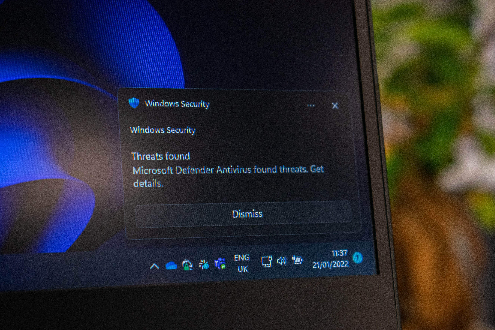
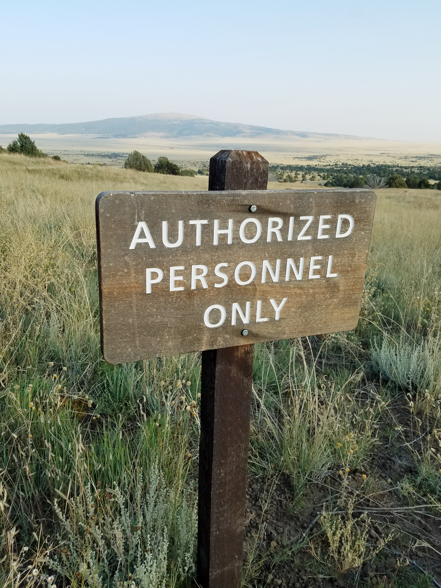

Antivirus Security

There are many different types of security systems, each one developed to be specialised at defending a certain type of information system.
For example we have the Anti-Virus, which scans the system and files on your computer for threats. Those threats
can come in many forms, for example: software, files, webpages and applications. When a threat is
detected, it is then quarantined and deleted from the system to prevent malware from causing damage. Some anti-viruses have the ability to read data
from web pages, allowing them to detect and flag potentially malicious websites.
Physical Security

Physical security aims to limit physical access to network resources by keeping them in a safe place inaccessible to most.
This can prevent malicious attacks by hackers or competitors by making them unable to simply walk in and mess with the equipment.
It also minimises the chance of accidental damage caused by an untrained employee. High-level physical security could also potentially
protect the resources from bigger physical threats like terrorists with explosives, biohazard events like radioactive spills, or even natural disasters
like earthquakes, hurricanes or fires.
Authorisation

Authorisation is the process of granting privileges to processes and users.
Different users will have different privileges, depending on things like job rank or department. For
example, a security administrator may have access and control ofer certain files and directories on a server, something a regular user would not be
allowed to do. The idea is that each user should be given only the minimum rights and permissions necessary to complete their tasks.
Giving each user authorisation individually by listing every single authorised activity would be difficult and time consuming. Therefore, different
techniques are put in place to simplify the process. For instance, the network manager assign users to individual groups with other users with
same privileges.
Firewalls
A firewall is hardware or software that helps security by controlling network traffic, allowing or denying as appropriate based on predefined rules.
A static stateless packet-filter firewall is the fastest and easiest to configure. It works by checking individual packets as they move through traffic.
A stateful firewall can allow or deny traffic in a more intelligent way, by tracking communication sessions.
A proxy firewall is the most advanced but the least common type. It intercepts application traffic between computers on the network as well as
external servers, examine individual packets as well as track sessions statefully. They are able to block potentially malicious traffic, as well as
any other unacceptable content.